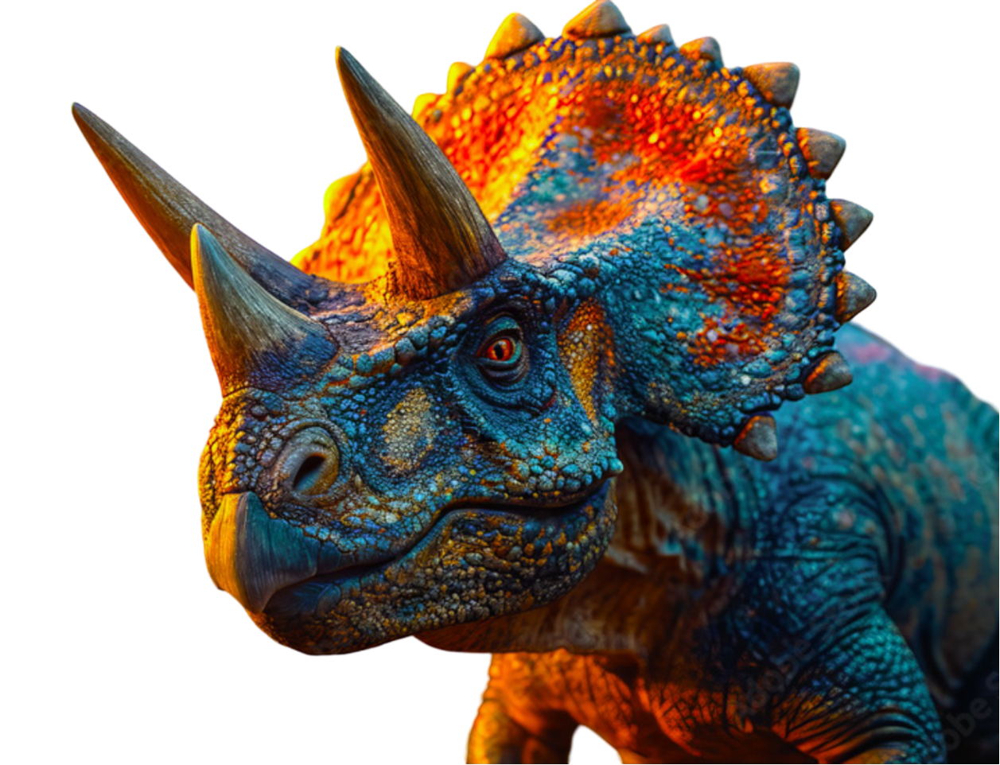

Tyrannosaurus Rex
The Tyrannosaurus rex, commonly known as the T-Rex, is one of the most well-known dinosaurs. It lived during the late Cretaceous period, around 68 to 66 million years ago.
Specimens of Tyrannosaurus rex include some that are nearly complete skeletons. Soft tissue and proteins have been reported in at least one of these specimens. The feeding habits, physiology, and potential speed of Tyrannosaurus rex are a few subjects of debate.
Several other genera of North American tyrannosaurids have also been synonymized with Tyrannosaurus. At present, two species of Tyrannosaurus are considered valid; the type species, T. rex, and the earlier and more recently discovered T. mcraeensis.
Deynonychus
Deinonychus antirrhopus. This species, which could grow up to 3.4 meters (11 ft) long, lived during the early Cretaceous Period, about 115–108 million years ago.
"Terrible claw" refers to the unusually large, sickle-shaped talon on the second toe of each hind foot. The fossil YPM 5205 preserves a large, strongly curved ungual. In life, archosaurs have a horny sheath over this bone, which extends the length.
Ostrom looked at crocodile and bird claws and reconstructed the claw for YPM 5205 as over 120 millimetres (4.7 in) long. The species name antirrhopus means "counter balance", which refers to Ostrom's idea about the function of the tail. As in other dromaeosaurids, the tail vertebrae have a series of ossified tendons and super-elongated bone processes.
Baryonix
Baryonyx, a genus of theropod dinosaur, lived during the Early Cretaceous period, around 125 million years ago. Discovered in 1983 in Surrey, England, Baryonyx walkeri, the type species, stands out due to its unique adaptations and ecological niche.
William Walker, an amateur fossil hunter, unearthed the near-complete skeleton of Baryonyx. The name "Baryonyx" means "heavy claw," referencing the dinosaur's distinctive large claw on each hand, while "walkeri" honors its discoverer.
Baryonyx primarily fed on fish, evidenced by fish scales and bones found in its ribcage. Its jaw and teeth morphology resemble modern fish-eating animals, with conical teeth and a long, narrow skull. The large claws likely aided in catching and subduing prey, similar to modern bears.
Triceratops
Triceratops, one of the most iconic dinosaurs, lived during the Late Cretaceous period, around 68-66 million years ago. Known for its distinctive three horns and large frill, Triceratops horridus has provided significant insights into the diversity and behavior of herbivorous dinosaurs
Triceratops was first described in 1889 by the American paleontologist Othniel Charles Marsh. The name "Triceratops" means "three-horned face," referring to the two long brow horns and the shorter nose horn that characterize its skull. "Horridus," the species name, means "rough" or "rugged," likely describing its robust appearance.
Triceratops was a large ceratopsid dinosaur, measuring about 9 meters (30 feet) in length and weighing up to 12 tons
